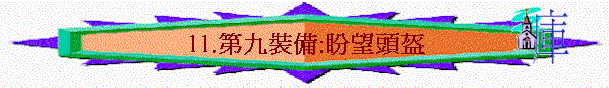

「但我們既然屬乎白晝，就應當謹守，把信和愛當作護心鏡遮胸，把得救的盼望當作頭盔戴上。」帖前5:8
∼帖前5:8又提及頭盔，而此頭盔與弗6:17，所說有重點不同地方，弗6:17重點是得救，而帖前5:8重點是盼望(雖有得救的元素，但主要是帶出盼望)，弗6的軍裝是要抵擋魔鬼，帖前5:8則是要等候主再來時謹守的軍裝
一.謹守盼望的果效
1.產生忍耐
「在神我們的父面前，不住的記念你們因信心所做的工夫，因愛心所受的勞苦，因盼望我們主耶穌基督所存的忍耐。」1:3
2.產生喜樂
「我們的盼望和喜樂，並所誇的冠冕是什麼呢？豈不是我們主耶穌來的時候、你們在他面前站立得住嗎？」帖前2:19
3.不再憂傷
「論到睡了的人，我們不願意弟兄們不知道，恐怕你們憂傷，像那些沒有指望的人一樣。」帖前4:13
二.謹守盼望的內容
∼與「得救」有關，而帖前所講的得救，不單是得永生，更包含神救恩的計劃
1.盼望主的再來
「在神我們的父面前，不住的記念你們因信心所做的工夫，因愛心所受的勞苦，因盼望我們主耶穌基督所存的忍耐。」帖前1:3
「我們的盼望和喜樂，並所誇的冠冕是什麼呢？豈不是我們主耶穌來的時候、你們在他面前站立得住嗎？」帖前2:19
∼信徒雖有患難，但常存盼望主再來的心，就可以產生忍耐
2.盼望將來復活
「論到睡了的人，我們不願意弟兄們不知道，恐怕你們憂傷，像那些沒有指望的人一樣。我們若信耶穌死而復活了，那已經在耶穌裡睡了的人，神也必將他與耶穌一同帶來。」帖前4:13-14
∼我們不是沒有指望的人，我們盼望有一日會復活
3.盼望免受刑罰
「因為神不是預定我們受刑，乃是預定我們藉著我們主耶穌基督得救。」帖前5:9
4.盼望與主同活
「他替我們死，叫我們無論醒著、睡著，都與他同活。」帖前5:10
∼我們不單會復活，更可以與主一起，而如今在世生活，也知道現在是與主同活，將來也死